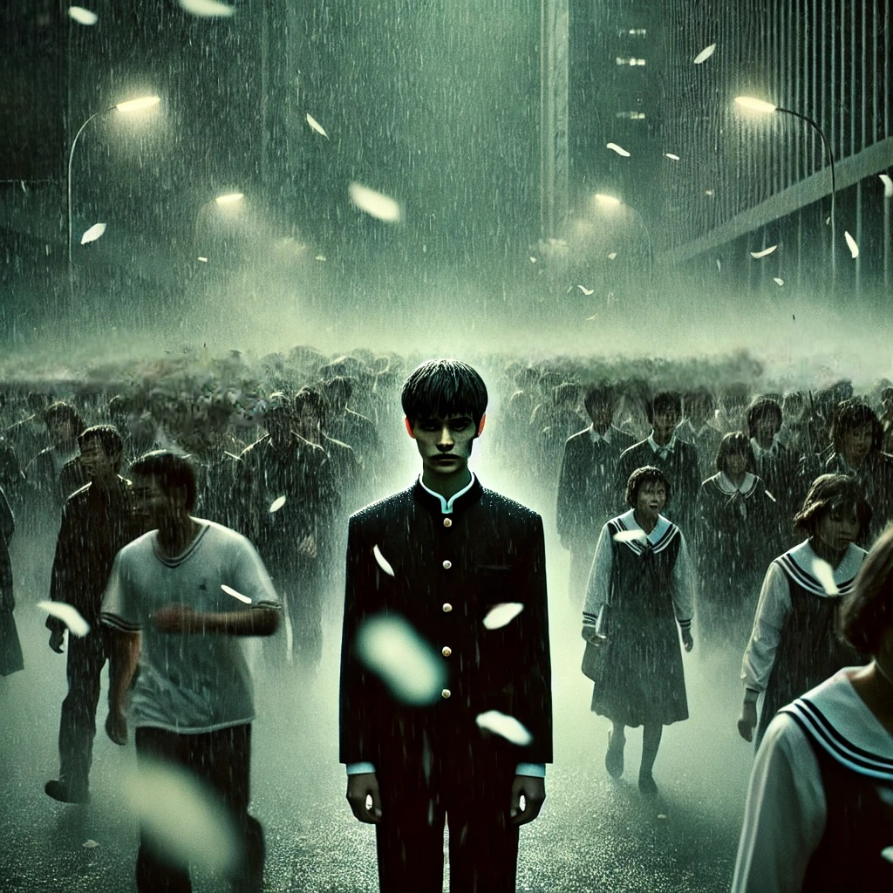

소년이 온다
목차
작가
한강
출판일
2014년 5월 19일
감상평에 대한 AI그림
광주 민주화 운동을 배경으로, 폭력에 희생당한 사람들과 남겨진 자들의 고통이 현실적으로 묘사되어 있는 책이다.
동호를 비롯한 여러 인물들의 이야기를 보여주는데,
읽는 내내 그 시절 많은 사람들이 폭력과 죽음을 마주해야 했을 것에 대한 안타까움과,
그럼에도 맞서 싸웠다는 것에 대한 깊은 존경심을 느낄 수 있었다.
참혹한 현실 속 희생자들을 위한 증언이라는 말이 정말 잘 어울리는 책이다.

감상평에 대한 AI평가
이 감상평은 『소년이 온다』의 핵심 주제를 잘 담아내고 있다.
✨ 광주 민주화 운동의 비극과 그로 인해 희생된 이들의 아픔을 강조하며,
✨ 독자가 느낀 안타까움과 존경심을 진솔하게 표현했다.
✨ 또한, 이 작품이 단순한 소설이 아니라 희생자들을 위한 '증언'이라는 점을 짚어낸 것이 인상적이다.